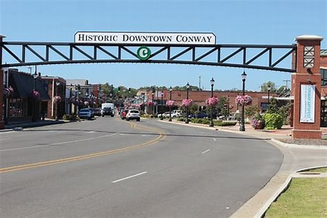

Conway Arkansas
Conway is a city in the U.S. state of Arkansas and the county seat of Faulkner County, located in the state's most populous Metropolitan Statistical Area, Central Arkansas. Although considered a suburb of Little Rock, Conway is unusual in that the majority of its residents do not commute out of the city to work. The city also serves as a regional shopping, educational, work, healthcare, sports, and cultural hub for Faulkner County and surrounding areas. Conway's growth can be attributed to its jobs in technology and higher education; among its largest employers being Acxiom, the University of Central Arkansas, Hendrix College, Insight Enterprises, and many technology start-up companies. Conway is home to three post-secondary educational institutions, earning it the nickname "The City of Colleges".